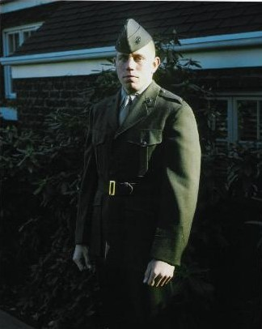

Team Breaker and the return of its missing
10 May 1967Team Breaker
Breakers MIA’s return home
Arlington National Cemetery Information and Press Releases.
6 May 2005
Brief note here to advise all. There have been some changes to the below information. No Chapel Service will take place prior to the ceremony at graveside. Please check with us on Monday between 1600 – 2100 at the Quality Inn Iwo Jima conference room. We will use this location as a communication center.
23 April 2005
Due to overwhelming response to our invitation to attend the reception following the Arlington Services we have been forced to not accept any further requests. Our guest list has surpassed the allowable limit and capabilities of the facility. We will accept requests to be placed on a wait list in case vacancies develop. Contact information is listed below.
GN.
18 April 2005 –Update From Email
Hello all, we are sending this as an update for the families and other guests on the plans for Arlington. I know many of you have questions and this may alleviate some of them.
First, I guess there are some questions in the family's i.e. Why are they doing this? This is a simple answer- we bled, suffered and endured with them just as if we were on the Breaker Patrol, and most importantly they were our Brothers. There will be at least one survivor from that patrol and others from the aircrews in Arlington. It is our responsibility to honor them upon their return and comfort their families during this emotional time. Lets just say it is something that we have to do. This is an example of Brotherhood as we know it. At the same time we know that this will help eject some troubling and emotional aspects from our minds, which we have lived with for so long. There will be closure for many on May 10.
Okay -here are the plans as we know them at this point. There will be busses provided to the families by the Marine Corps & Navy. The Casualty office explained their regulations state they are only to transport to funeral services and then back to the hotel the families were picked up from. The Veterans & other guests will utilize busses under our contract with a charter bus company. We are in hopes to change some minds in the casualty offices. In case we are unsuccessful the reception location is within walking distance from both hotels and we will help shuttle people if necessary. Some folks arriving are handicapped and need transportation.
We suggest that any folks driving to Arlington and are on our invite list to drop off autos at the Quality Iwo Jima and ride our busses. Drivers will not have to worry about parking or getting lost.
The best way to do this is to set a game plan or warning order as Marines call it, in place. We ask that Phil, Dana, and Irene to be the contact persons for each family. On 9 May at 4:30pm we will distribute name tags to the family reps and to our veterans and other guests. These will be used to identify the person with the Family Marine and also used as invitations to the reception.
The schedule at this date is this.
The families will be picked up at the two hotels -Virginia Suites and Quality Inn Iwo Jima. (We will advise pick up time at later date) They will be taken to the Ft. Meyers Chapel and arrive by 10:30. There will be a short service at the chapel and then busses will transport to graveside in Section 60 at Arlington. The service will begin at 11:00. The reception will begin at a planned time of 2:00 pm until 5:00pm.
The reception will be held at The Top of The Town at 1400 N. 14th Street, Arlington. We have chosen this location as we think it suits all of our needs. You can view the internet website for familiarization.
See http://www.topofthetown.net/
I have placed a map of the two hotel locations and the Top of the Town.
See http://www.georgeneville.com/arlingtonmap.htm (missing from the original site)
Quality Inn Iwo Jima -
Virginia Suites
There will undoubtedly be more questions as we get closer to May 10th. This information and updates will be posted here.
http://www.georgeneville.com/reconteambreaker.htm
This will be a very large gathering at Arlington. DOD & Government Officials, Press, Other Veterans, and many other interested people in attendance.
We have a cut off limit of 180 for the reception and only a few spots are left. There will be no government officals at our reception.
Arlington Committee
Email contact & phone contact George Neville
Alpha Recon Association

"Serving Our Marines Since 1989"
The Return of Recon Team Breaker’s MIA’s
| 10 May 1967 | 1stLt. | Ahlmeyer Jr. | Heinz | Pearl River | NY | 19E | 77 | |
| 10 May 1967 | HM3 | Miller | Malcom | T. | Tampa | FL | 19E | 84 |
| 10 May 1967 | LCpl. | Sharp Jr. | Samuel | A. | San Jose | CA | 19E | 86 |
| 10 May 1967 | Sgt. | Tycz | James | N. | Milwaukee | WI | 19E | 88 |
 (missing from the original site)
(missing from the original site)  (missing from the original site) (missing from the original site)
(missing from the original site) (missing from the original site)
1stLt. Heinz Ahlmeyer Jr. Sgt. James Neal Tycz HM3 Malcom T. Miller LCpl. Samuel A. Sharp,Jr.
Photos of Ahlmeyer and Sharp can be enlarged – just click on the photo
Arlington National Cemetery Information
Background
On May 9th 1967 US Marine Corps Recon Team Breaker was inserted by helicopter into the jungle area just south of the Demilitarized Zone, approximately 12 kilometers NW of Khe Sanh Combat Base. Their mission was to gather information on suspected enemy infiltration routes. Given the history of prior enemy sightings and enemy contact by a previous recon patrol in the same exact area enemy contact was highly probable. Shortly after midnight the patrol came under heavy small arms fire. 2nd Lt. Heinz Ahlmeyer and Pfc Samuel Sharp were killed instantly. The remaining patrol members fought with the enemy throughout the night and into day of May 10th. The Patrol Leader Sgt. James Tycz and Hospital Corpsman Malcolm Miller were wounded and subsequently died during the night. The three remaining Team Members Clarence Carlson, Carl Friery, and Steven Lopez were all wounded. They were extracted after the gallant efforts of the helicopter aircrews enabled a successful in recovery of the wounded but were unable to recover the fallen team members Ahlmeyer, Miller, Tycz, and Sharp. Due to heavy combat and the extreme danger in the enemy's zone these Marines that were killed in action were unable to be recovered throughout the Vietnam War. Additionally Capt. Paul Looney a pilot was killed during one of several attempts to extract the team. Several aircrew members were also wounded.
The remains of our Marines were recovered by the men and women of the Joint POW/MIA Accounting Command during a recovery operation during May 2003. These remains were repatriated to Hawaii on 23 May 2003. All four were positively identified by DNA examination and dental comparisons.
Arlington National Cemetery Information
On 10 May 2005 our men that have been missing since 1967 will now be honored and interred at Arlington National Cemetery on the 38th anniversary of the engagement on Hill 655, Quang Tri Province, Vietnam.
A group interment will take place for all four men, as well as three individual interments for Heinz Ahlmeyer, Malcolm Miller, and James Tycz. For those that wish to attend it is suggested that you refer to the Arlington National Cemetery website for complete information for visiting Arlington. It can be found at http://www.arlingtoncemetery.org/
The Alpha Recon Association is assisting in the coordination of the burial ceremonies and hosting the reception that will follow the interments. The exact time for the Group Burial is not known at this time. For additional information as it becomes known please check http://www.georgeneville.com/reconteambreaker.htm. The times are also posted on the main page for Arlington National Cemetery.
For further information, including San Jose hotel info, contact either:
26 January 2005
With sincere gratitude to the folks at the Joint POW/MIA Accounting Command for their years of tireless and highly professional endeavor to “Bring Home” our Marines, who were left behind on that dreadful day of 10 May 1967, The Alpha Recon Association announces these men have been returned to US soil.
Currently the Marine and Navy Casualty Officer’s are working with the families to coordinate burial ceremonies. These preliminary efforts will take place during the month of February.
We will be in close contact with the families during this time and will release additional information, as appropriate.
Alpha Recon Association
United States Marine Corps Veterans